Your YouTube subscriptions, finally sorted
SortTube puts your channels into groups — News, Music, Learning… — and gives each group its own feed, right inside YouTube.
Free · Works in Chrome, Edge and Brave · No account, no tracking
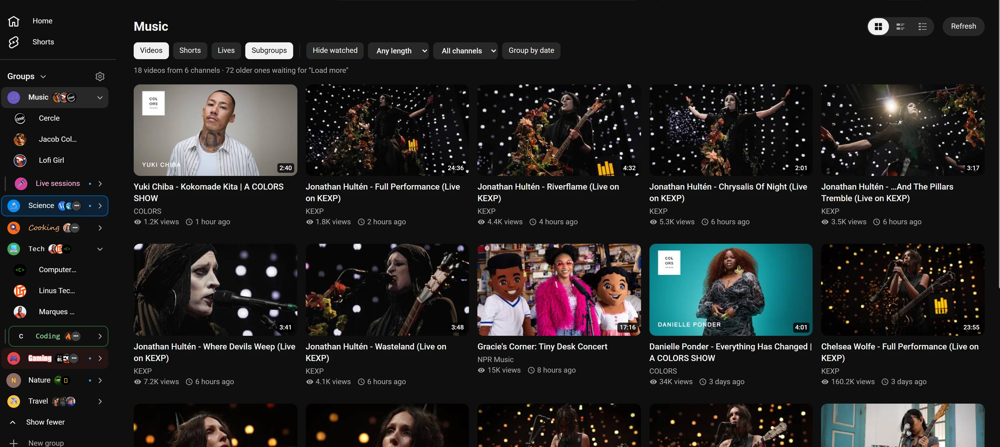
Features
Everything you follow, in order
YouTube's Subscriptions feed mixes everything. SortTube lets you choose what to watch, and when.
A feed for every group
Only those channels, newest first: videos, Shorts, live streams and premieres. As a grid, a list or compact.
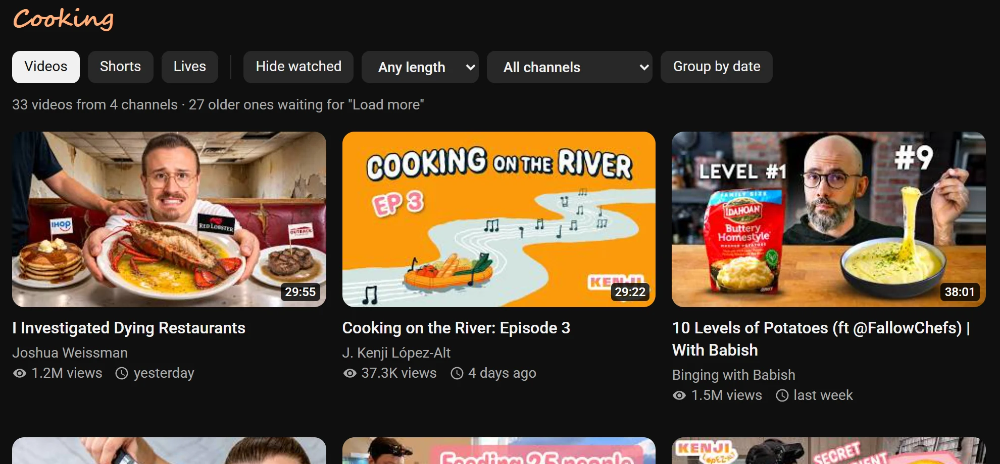
Groups in the sidebar
Right above Subscriptions, with their channels' avatars and a blue dot when there's something new.
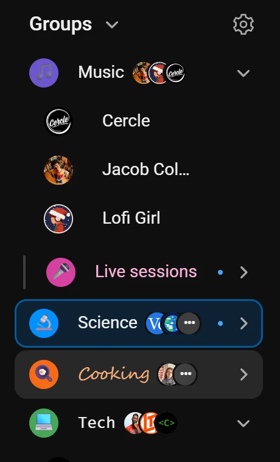
Sort in minutes
All your subscriptions in one list: one click puts a channel in a group. Select many at once to go faster.
Clean up
An activity light shows which channels have gone quiet. Unsubscribe from several at once, or subscribe again.
Your progress, from YouTube
Red progress bars and “watched” marks straight from your YouTube history. Hide what you've seen.
Real video previewPRO
Hover a thumbnail and watch the actual video, with sound, volume and a time bar. Free gives you a five-second taste.
Anywhere
Add channels from anywhere
The SortTube button sits next to Subscribe: tick a channel's groups without leaving what you're watching. Or sort many at once in the organizer, just below.
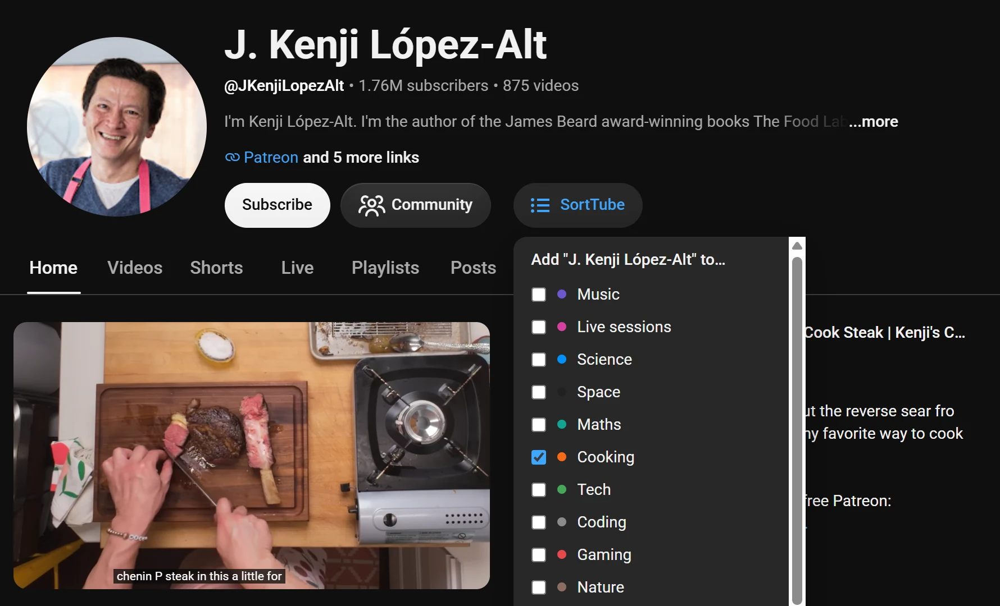
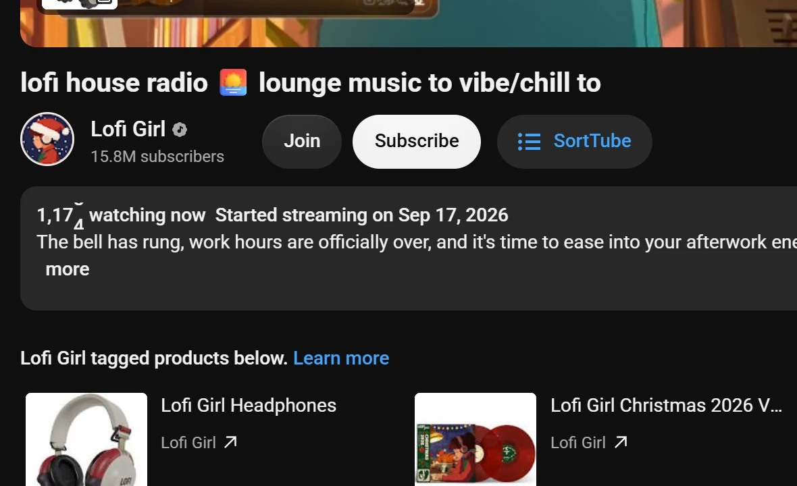
Organizer
Hundreds of channels? A few minutes.
Every subscription in one place, ready to sort.
- One click adds a channel to a group, another click takes it out.
- Select several (Shift for a range) and add them, take them out or unsubscribe in one go.
- Traffic light: active, slowing down or inactive. Sort by the least active to know what to drop.
- Without a group: show only the channels you haven't sorted yet.
- No need to subscribe: a group can hold channels you don't follow on YouTube. They show up here too, with their Subscribe button, in case you change your mind.
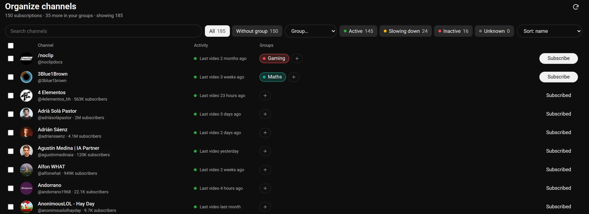
Feed
Watch each group your way
Every group has its own feed, newest first, and you choose how it looks.
- Grid, list or compact. The list shows the start of each description.
- Videos, Shorts and live streams: turn each one on or off.
- Premieres and scheduled streams, with the time they start.
- Watch later and queue right from each video.
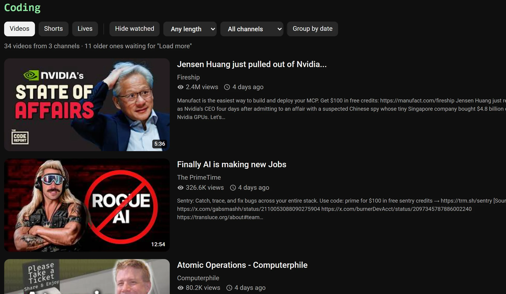
Sidebar
Your groups, always at hand
Right above Subscriptions in YouTube's sidebar, and one hover away when the sidebar is narrow.
- A blue dot marks the groups with new videos.
- Unfold a group to see its channels.
- Right-click a group to rename, customize or delete it. Drag it to reorder.
- With the narrow sidebar, hover “Groups” to open them.
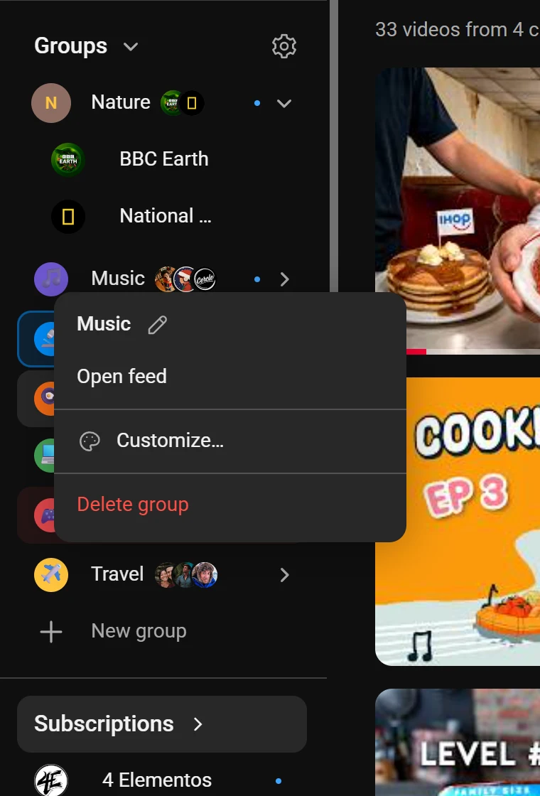
Customize
Make each group yoursPRO
A look you recognise at a glance, in the sidebar and at the top of its feed.
- Icon: a colour, the group's initial or an emoji, and a ring around it.
- Name: its colour, five fonts and an outline.
- Card: a background and a border, as strong or as soft as you like.
- Try everything for free: saving the styles takes Pro.
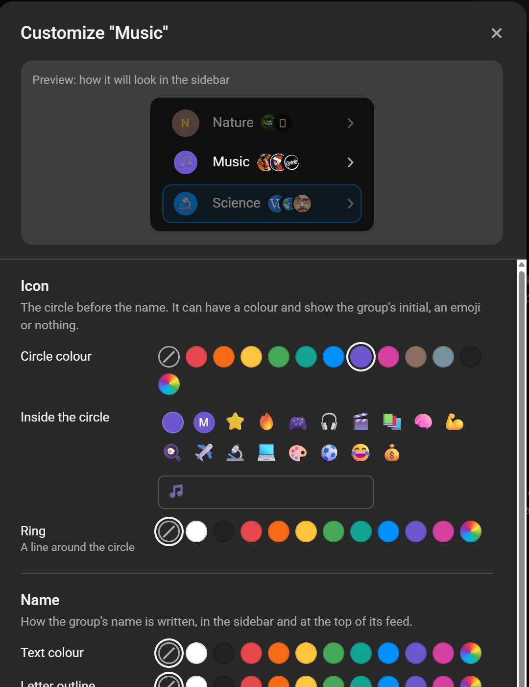
Subgroups
Groups inside groupsPRO
Languages → English, Chinese. Cooking → Desserts, Vegan. Big topics stay tidy without losing the whole picture.
- Drag a group onto another to put it inside, and out again to take it out.
- The parent's feed can show its subgroups' videos too, or only its own.
- Fold and unfold them in the sidebar.
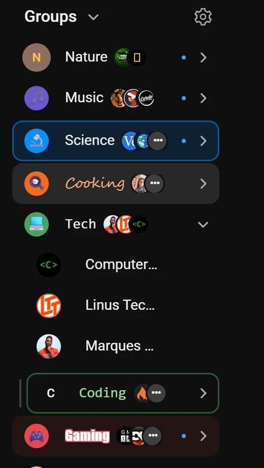
Your way
Settings that stay out of your way
The extension button opens a small settings panel: language, what the sidebar shows, when a video counts as watched, backups and Pro.
- 15 languages, and video titles as YouTube shows them in yours.
- Backups of your groups in a small file you keep.
- Works with YouTube's light and dark themes, and with the narrow sidebar.
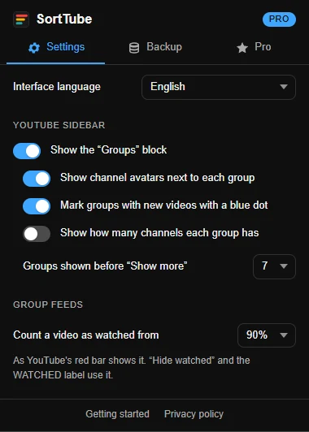
Pro
See the video without opening it
With Pro, hovering a thumbnail plays the actual video, not just a few seconds of animation.
- With sound, volume and a time bar to jump anywhere.
- Filters: hide what you've watched, filter by length or channel, group by date.
- Customize every group: colours, emojis, fonts and backgrounds.
- Subgroups, and drag channels from one group to another.
Privacy
No servers. No tracking.
Stays with you
Your groups live in your browser and sync with your Chrome account. Nothing reaches us: we have no servers.
- No account to create
- Backups in a file you keep
Only YouTube
SortTube talks to YouTube, just like the page you already have open. Your password never goes near it.
- Your own YouTube session
- No password, ever
No ads, no analytics
Nothing is sold, nothing is tracked. If you buy Pro, Polar checks your license.
- Zero trackers
- Polar only for Pro
Pricing
Free to start. Pro when you want more.
Free
Forever
- Unlimited groups
- Groups in YouTube's sidebar
- A feed for every group: grid, list or compact
- Videos, Shorts, live streams and premieres
- The organizer, the activity light and bulk unsubscribe
- Watch later, queue and progress bars
- A five-second preview on hover
- Backups
Pro Launch price
Pay once, keep it. No subscription. VAT included.
- Everything in Free
- Every future update
- Real video preview on hover, with sound
- Filters: hide watched, length, channel, group by date
- Customize groups: colours, emojis, fonts and backgrounds
- Subgroups
- Drag channels between groups
Install SortTube first: after buying, you copy your license key from Polar's customer portal and paste it in SortTube → Pro.
Frequently asked questions
Is SortTube free?
Yes. The free version has everything you need to sort and watch your subscriptions, with as many groups as you like. Pro is optional.
Do I have to give you my Google account?
No. SortTube uses YouTube in your own browser, the same session you already have. It never sees your password and has no servers of its own.
Which browsers does it work in?
Chrome and the browsers that install extensions from the Chrome Web Store: Edge, Brave, Opera, Vivaldi…
Do I have to be subscribed to a channel to add it to a group?
No. Add any channel from its SortTube button and its videos show up in the group's feed, without notifications and without filling your subscriptions or YouTube's home page. Unsubscribing from a channel doesn't take it out of its groups either.
Can I try the Pro styles before buying?
Yes. The Customize window lets you try every colour, font and background on your own groups; only saving them takes Pro.
How do I activate Pro?
After buying, sign in to Polar's customer portal with the email you paid with and copy your license key. Then click SortTube's button in the toolbar → Pro → Enter my license key.
Is Pro a subscription?
No. You pay 9,99 € once and Pro is yours, with every future update. Nothing renews and nothing is charged again.
What if SortTube stops being updated?
If I ever stop maintaining SortTube, I'll publish a last version with Pro free for everyone, so nobody loses what they paid for.
Will I lose my groups if I uninstall it?
Download a backup first (SortTube's settings → Backup) and import it later. With Chrome sync on, they also come back on your other computers.
Is SortTube made by YouTube?
No. SortTube is an independent extension, not affiliated with YouTube or Google.